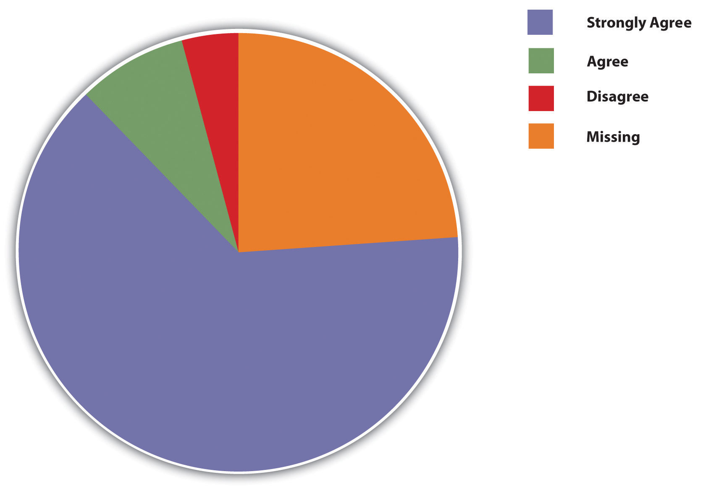

Janet knew that her argument was really weak. She kept looking at the data trying to find a way around the weakness. Finally, it hit her. She realized that she could hide the weakest part of her argument in a really complex presentation aid. If the people can’t understand it, they can’t use it against me, she thought to herself.
While she was nervous during her presentation, she was confident that no one would notice what she did. Thankfully, at the end of her presentation everyone applauded. During the question and answer period that followed, no one questioned the weak information. In fact, no one seemed to even remember the presentation aid at all.
Polly was in the middle of her speech about the importance of climate change. The presentation aid she shows is a picture outlining where the hole in the earth’s ozone is located. What aspect of audience understanding is Polly hoping to impact with her aid?
Benny conducted a simple survey of his fraternity members to see what their thoughts were on instituting a no-hazing policy. During his presentation to the group he used the following aid to discuss his findings. What type of aid is Benny using?
Figure 15.21
Which form of presentation aids are drawings that outline and explain the parts of an object, process, or phenomenon that cannot be readily seen.
Which of the following is not true about using black/dry-erase boards as presentation aids?
Which of the following is a tip for effectively using presentation aids?